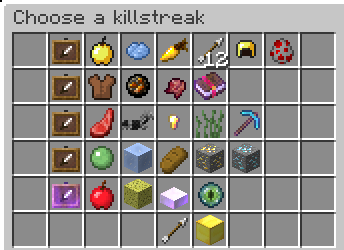

| The Pit 1.0.0 | |
| The Pit 1.0.0 - Release! | |
|  | |
| A screenshot of the new Killstreaks menu. | |
| Release Date | Apr 21st, 2020 |
|---|---|
| Forums Approval*Forums approval is based on the number of positive reactions on the update's forum post divided by the number of total reactions. Reactions only count if they were added in the first month of the post being up. | 97.4% |
| Forums Author | Minikloon |
| ← Genesis Map — Fixes → | |
The Pit 1.0.0 marked the official release of the Hypixel Pit. It introduced Killstreaks, new renown unlocks including shop items and killstreak bundles in addition to the standard passive upgrades, achievements, the profile viewer, Pit Supporter, and many balance changes and bug fixes. The Renown Shop was divided into categories due to all of the upgrades added during the update.
The primary addition of the update, killstreaks, allowed players to gain rewards or combat advantages by killing several players in a row without dying. In order to prevent players from becoming unkillable and reaching incredibly high killstreaks, megastreaks were also added, which provide short-term benefits and a bonus upon death, but cause the user some detriment as their killstreak increases. Players have the Overdrive megastreak equipped by default and cannot un-equip it. Several items were added along with megastreaks, such as the Beastmode Helmet and Totally Legit Gem. A list of megastreaks may be found on the megastreaks page, and information on related items may be found on their respective megastreaks' pages.
The Item Shop was also updated with ten new items available to unlock in the Renown Shop. A list of these items may be found on the Item Shop page.
In addition to the new killstreak bundles and shop items, the Autobuy, Very Yummy, Experience-Industrial Complex, One Upper, Self Confidence, Promotion!!, and Celebrity upgrades and the Assistant to the Streaker, Co-op Cat, and Thick perk were added to the Renown Shop.
The /view [username]
command (and its shortcut, sneak + right-clicking on the target player) was introduced, allowing players to view the inventory and profile of the selected player.The Pit Supporter upgrade was also added and was available for purchase by players at Prestige II or higher. For 1,000 Hypixel Gold (The equivalent of $10 USD), players could purchase the ability to dye standard colors of Fresh Pants and the /events command. Players who purchased Pit Supporter would have a star (✬) suffix next to their username in their nametag and in their chat messages.
Balance changes:
Gameplay changes:
Bug fixes: